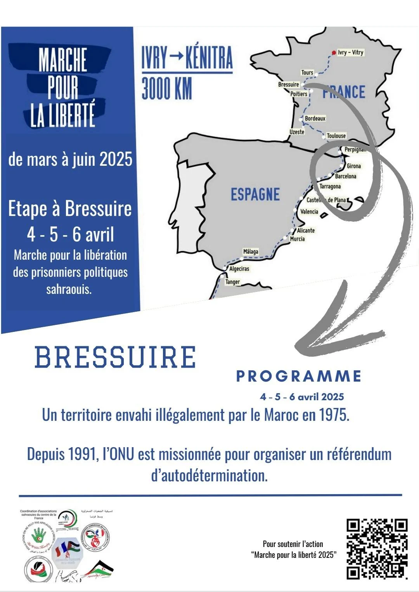
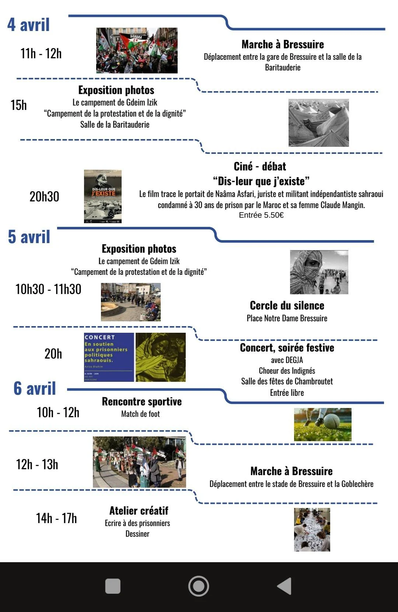

Appel archivé
À Bressuire, la Marche pour la liberté du peuple sahraoui
Date indiquée par Facebook · 3 avril 2025
Repères éditoriaux
Nous avons soutenu l’étape bressuiraise de la Marche pour la liberté, les 4, 5 et 6 avril 2025. Le programme joint détaille les rendez-vous et la vidéo du 4 avril montre un moment de la marche.
Texte conservé avec la publication
4, 5 et 6 avril, étape à Bressuire de la "Marche pour la liberté".
Le PCF79 apporte son soutien à cette manifestation; faire connaitre, défendre le peuple Sahraoui face à la colonisation illégale du Maroc. Nous demandons l'application des résolutions de l'ONU pour le peuple Sahraoui, son Etat souverain, et le respect des droits de l'Homme.


Sources
Archive rouge · export Facebook · AR-0002-FB-01153
À lire aussi · À Bressuire, marche pour la liberté du peuple sahraoui